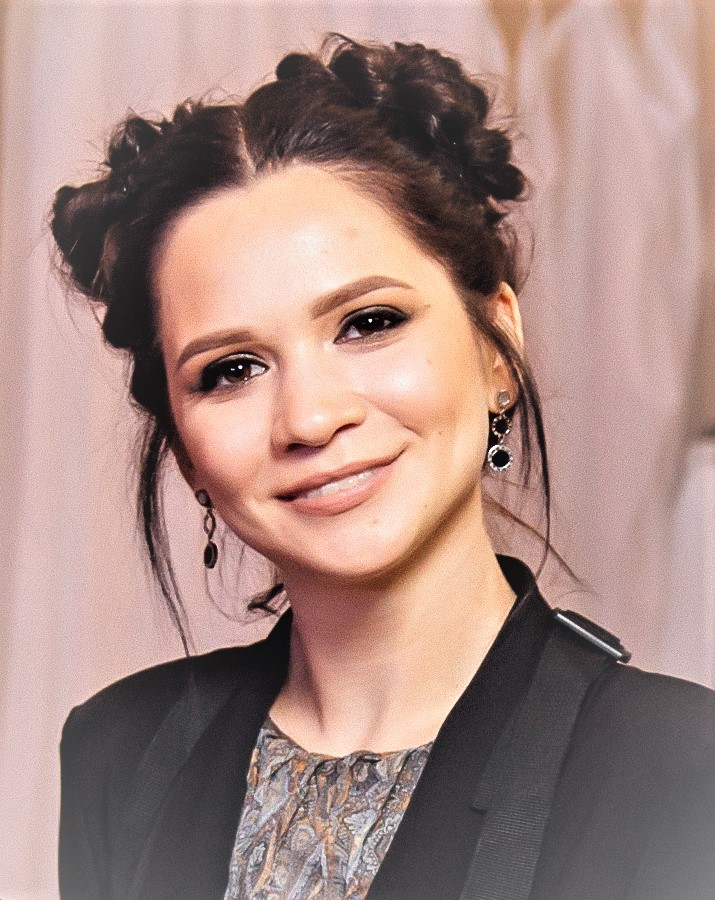

Маю економічну освіту та працюю за фахом. Однак душа просить цікавої, різноманітної роботи. Саме тому я обрала напрямок в IT. Пройшла тижневий марафон з верстки сайту в GOIT, та закохалась в цю справу. Маю намір опанувати Front-end та отримати гарну роботу. Hillel IT School мені порекомендував друг-тестувальник.
Трохи про себе: вивчаю англійську, наразі маю рівень upper intermediate. Люблю читати, переважно детективи. Музику слухаю в основному зарубіжну. Така класика як AC/DC часто грає у мене в навушниках. Люблю домашніх тварин, маю товстого кота. Також полюбляю смачно поїсти, тож ділюся крутезним рецептом пирога. А ось мій Instagram.
